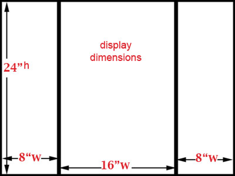

The
LeRoy Neiman Gallery
Columbia University
Opening Reception: Thursday Night, Sept 9th
Exhibition runs: Sept 7th - Sept 30
A sample placement of participants’ questionnaire responses & other
supporting visual material (photographs, posters, etc). Additional media,
objects, and other components can be placed in the center space or nearby.
Guidelines:
We are still compiling the final list of artist/curators for the invitation
and signage.
We
are now asking you to please confirm the details of your participation as
soon as possible:
1. Please provide us with the preferred typing and spelling/typing
of your name, and if relevant your organizations’ name/title. We will
use this for the exhibition’s printed invitation and gallery signage.
Please send this information by email to: con_nect_the_dots@hotmail.com
2. Confirm with us that you did receive our Questionnaire;
that you can send us your answers and materials within our timeframe; and
let us know if you have any special needs, equipment requests, and design
considerations for your presentation display. We are attaching a diagram of
our display modules to give you an idea what format and dimensions your responses
and materials will fit within.
Next, to
fabricate the display for your contribution we will need the following:
3. By Friday SEPT 3rd, please send your
answers to the questionnaire, and
4. Please send the images from your selected curatorial project
(which we will print), and other supporting materials (catalogues, posters,
etc). If you do not have visual support, please let us know and we will use
your submission in our text-only display template.
If you cannot make these dates, please let us know and we will try to work with you.
If you are
mailing your materials, please send them to:
c/o David Dempewolf
Columbia University
Visual Arts Division
2960 Broadway
310 Dodge Hall, MC 1806
NY, NY 10027
Please
feel free to call with any questions:
David 215 205 9702
Scott 215 206 8176

Display module dimensions (1 inch thick honeycomb cardboard, cut and folded)